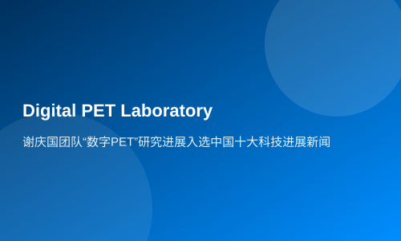

谢庆国团队“数字PET”研究进展入选中国十大科技进展新闻
1月11日，由两院院士评选的2019年度中国十大科技进展新闻揭晓，“我国自主研发临床全数字PET/CT装备获准进入市场”入选，该成果由华中科技大学教授谢庆国带领团队完成。
据了解，谢庆国团队研发成功的临床全数字PET/CT，于2019年5月底通过国家药品监督管理局注册审批，获得市场准入和对外销售资质。这意味着国产全数字PET打破国际技术垄断，中国高端医疗仪器开发取得重大突破。PET是正电子发射断层成像的简称，是当今尖端的分子医学影像技术，在恶性肿瘤、神经系统疾病、心血管疾病等重大疾病早期诊断、疗效评估、病理研究等方面，具有极大应用价值。
谢庆国团队于2004年发明“数字PET”概念，历经10余年形成完整技术体系。在此基础上研发的临床全数字PET/CT装备，使用了具有完全自主知识产权的全数字PET技术，以“全数字”和“精确采样”为本质特点，从源头上颠覆了传统PET的技术路线，可精准检测到最小尺寸病灶，大幅提前癌症发现时间。目前，团队正致力于应用专用新型数字PET研究，包括面向清醒、自由活动动物脑成像的双动态PET，这将使数字PET跨入“人无我有”的2.0时代。
从一个原创概念出发，发展出完整的技术体系，形成系统、变成产品、进入市场，用了足足十九年时间。它罕见地集“高度原创”、“技术成熟”、“自主可控”这三个巨大却又互有排斥的优势于一体，或将带来全产业链的创新发展。
近日，完成取证的临床全数字PET/CT也完成了首笔销售，装机湖北省鄂州市中心医院，并将于年后正式投入临床使用。未来，团队将力推数字PET的应用示范，探索数字PET创新系统和杀手锏应用，让数字PET实现更多应用、进行更好的技术更新与产品迭代，早日降低普通民众获取PET服务的门槛，造福人类健康。
据悉，中国科技十大进展是由中国科学院、中国工程院主办，中国科学院学工部工作局、中国工程院办公厅、中国科学报社承办，中国科学院院士和中国工程院院士投票评选的年度中国十大科技进展、世界十大科技进展，此项年度评选活动至今已举办了26次。评选结果经新闻媒体广泛报道后，在社会上产生了强烈反响，对宣传、普及科学技术起到了积极和重要的作用。
此前，谢庆国团队先后因“PET数字化领域取得技术突破”、“临床全数字PET在武汉研制成功”为进展，获得2012年、2016年中国十大科技进展新闻提名。
责任编辑：程远州